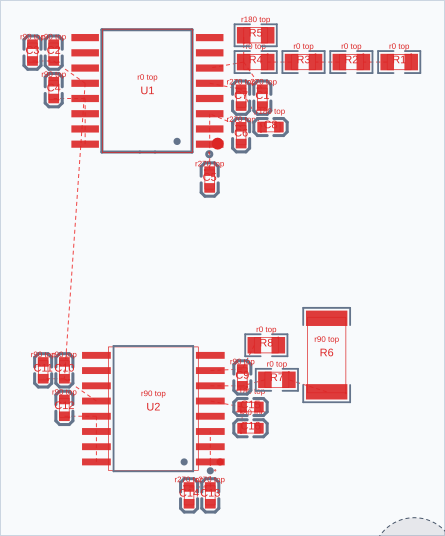

«До» — последний результат с фиксированным USB и мягкими зазорами (after-final). «После» — только новый завершающий проход по той же плате, без повторной сборки блоков или перепаковки. Это изолированная проверка нового этапа, который теперь вызывается и в основном плейсере после postrefine.
На этой компоновке безопасных улучшений среди проверенных кандидатов не найдено. До и после совпадают; исходная плата сохранена.
Порог похожести 0.78; учитываются состав, типы локальных соединений и размеры основного корпуса. Дополнительный диод снижает сходство постепенно. Рассматриваются только соседние блоки, перенос каждого компонента ограничен 3 мм от исходного состояния. Ориентации и внутренняя сборка сохраняются. Выравнивание — ограниченный мягкий штраф, а не требование.
Проверено 74 кандидатов за 1.75 с, принято 0 перемещений пар; изменено 0 компонентов. Проверка изменения native: true. Результат не трассировался; линии — MST.
Исходные нарушения обязательного межгруппового зазора не исправляются этим проходом. До: 7, после: 7. Абсолютная проверка платы: false → false. ASM предназначен для сравнения; в EasyEDA ничего не применялось.
| Метрика платы | До | После |
|---|---|---|
| Длина MST, мм | 2392.86 | 2392.86 |
| Пересечения линий | 299 | 299 |
| Пересечения чужих падов | 296 | 296 |
Причины отклонения (первая сработавшая проверка): {"objective":56,"electrical":2,"netLength":1,"geometry":0,"hardHint":15,"native":0}. Пары, у которых для выравнивания требуется слишком большой перенос, не порождают кандидатов.
| Блоки | Центры | Сходство | Смещение осей до, мм | После, мм |
|---|---|---|---|---|
| isolated_supply_pos / isolated_supply_neg | U14 / U18 | 1.00 | 8.00 | 8.00 |
| low_charge_pos / low_charge_neg | R38 / R44 | 1.00 | 5.71 | 5.71 |
| hv_neg / hv_pos | L4 / L3 | 0.95 | 1.24 | 1.24 |
U1/U2 распознаны как похожие, но отфильтрованы по расстоянию: зазор между габаритами 9.29 мм превышает локальный порог 8 мм. Механизм не притягивает их через плату.



ASM после · ASM до · Диагностика и все изменения. ASM содержит только размещение подвижных компонентов.